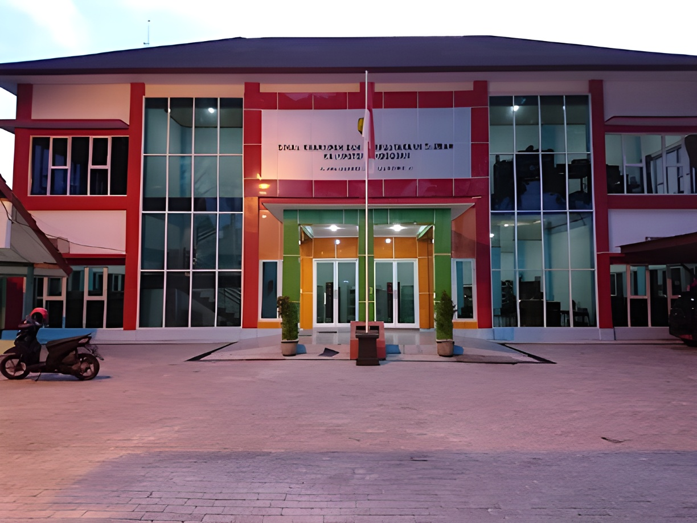

Selamat Datang di Website Perpustakaan Kabupaten Grobogan
Temukan kemudahan dalam menjelajahi, meminjam, dan mengelola koleksi buku favorit Anda. Website ini dirancang untuk memberikan pengalaman membaca yang modern, cepat, dan praktis di mana saja dan kapan saja. Mari tingkatkan budaya literasi bersama, mulai dari sini.
